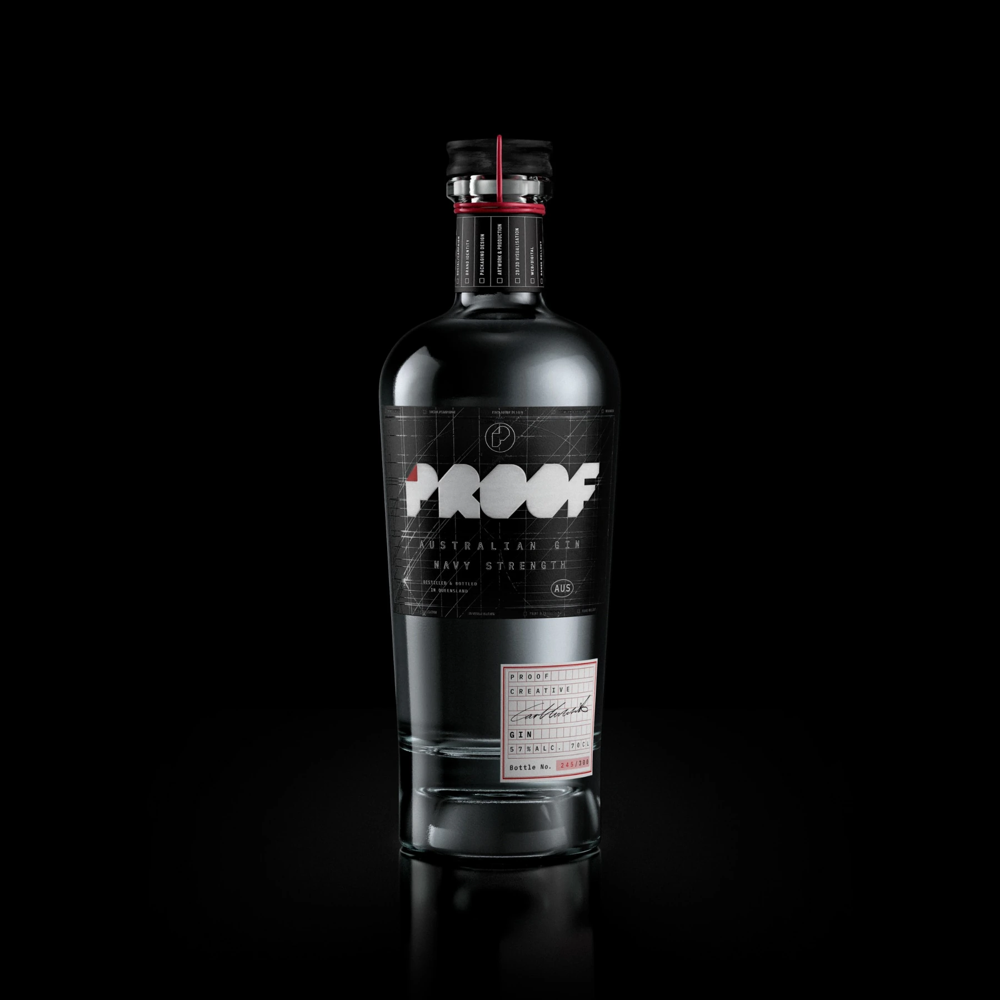
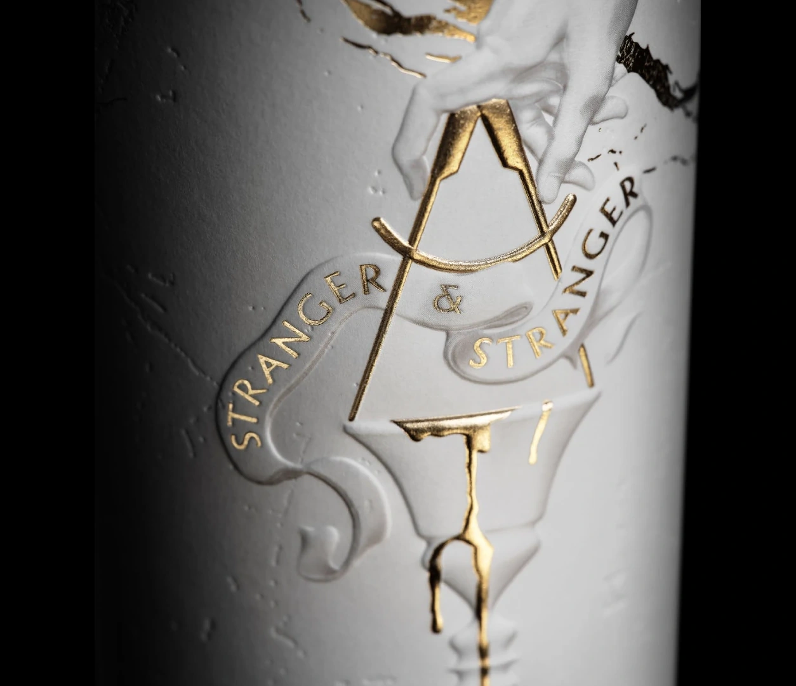
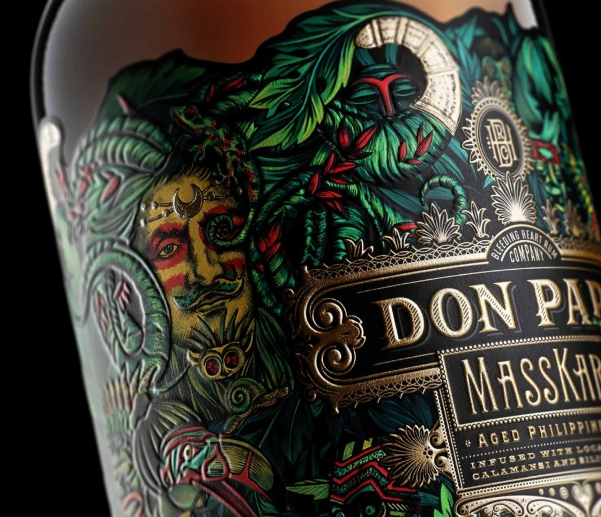
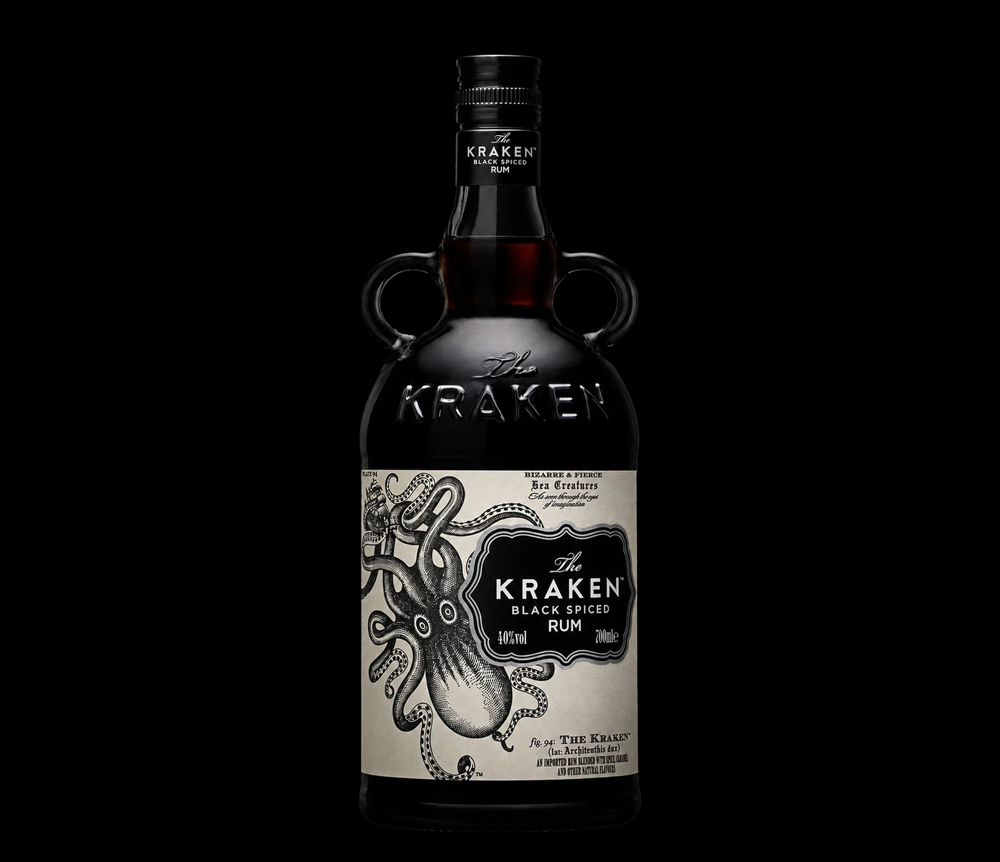
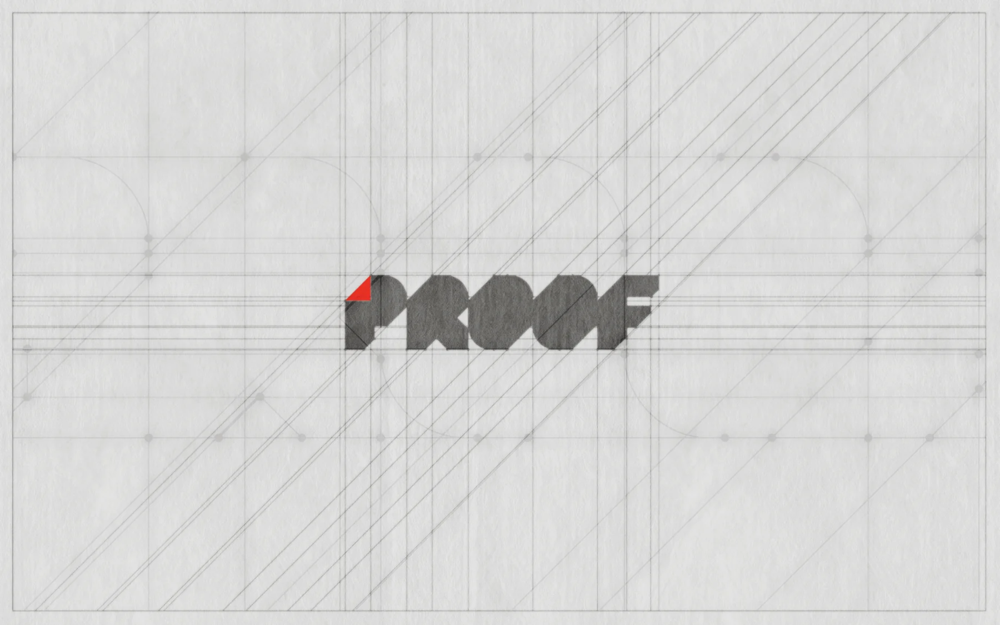
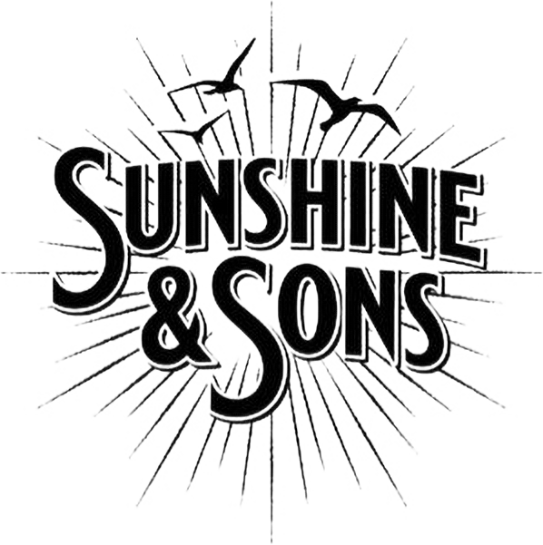

Brick
Architects
A refined monogram. A confident wordmark. A considered system for print and digital.
Identity application mock-up
View the projectIndependent packaging & branding studio
Independent packaging design and brand identity studio in Brisbane, Australia. Working with ambitious brands and creative agencies internationally.
We build distinctive brands
and bring ambitious ideas to life.

A study in precision.PROOF / NO. 001Featured studio project
Brand identity & packaging
A project by Proof Creative
Brisbane, Australia
Working internationally
An idea is only the beginning.
001 / The featured project
The studio.
In another form.
Our own identity, expressed through packaging. A closer look at the mark, the material and the details that make it Proof.
PROOF CREATIVE / BRAND & PACKAGING
The maker's view / A studio study
The difference is in the detail.
 01 / The markLook closer +
01 / The markLook closer +
Proof Creative / Close-up
The mark. The construction.
The complete expression.
From the angular mark to the fine construction lines, a closer look at what makes it Proof.
Move over the image to look closer.
Tap on mobile. Arrow keys when focused.
01 / Selected work & experience
Different briefs. The same care.
Distinctive identities. Complex packaging. Creative ideas resolved for the real world.
A refined monogram. A confident wordmark. A considered system for print and digital.
Identity application mock-up
View the project
A precise, confident identity for a Brisbane surveying practice. Built to work everywhere.

Carl's production design, completed at Stranger & Stranger.
Creative direction & brand design by the S&S studio team.
More from the archive

05 / 11Selected experience / At Stranger & Stranger

06 / 11Selected experience / At Stranger & Stranger
 09 / 11
09 / 11Selected experience / At Stranger & Stranger

10 / 11Selected experience / At Stranger & Stranger
Studio projects and selected prior experience.
Individual roles credited throughout.
02 / Expertise
Idea – Design – Reality
A new brand. A better pack.
An idea ready to take shape.
Proof Creative brings design and production expertise together, with a personal approach to the work and careful attention to how it will be made and used.

From a first concept to a complete range, we develop packaging with a clear identity and a considered path to production. Design, artwork, materials and finishes are resolved with the finished pack in mind.
Packaging design / Design realisation / 3D visualisation / Print & production
Explore packaging designWe create and refine the visual identity of your business, then help it work consistently wherever people encounter it. From the logo and its supporting elements to websites and campaigns, each application draws from the same considered foundation.
Brand identity / Visual systems / Website design / Social & campaign creative
Explore brandingAn AI-generated concept can be a useful starting point. We develop the design behind it – resolving inconsistencies, rebuilding assets and preparing the work for its intended use across brand, packaging and digital applications.
Concept review / Design refinement / Brand, packaging & digital execution
Explore AI-to-RealityStudio stationery
Proof Creative / Identity in print
The wordmark, construction lines and red corner, carried through to the studio's own cards.
03 / Why Proof?
Independent by design.
Great creative work doesn’t need a big agency.
You work directly with an experienced creative professional, no unnecessary layers, with the technical expertise to bring ideas into the real world.
From focused packaging refinements to complete brand transformations, we tailor our approach to your ambitions, your project, and your budget.
The thinking is big.
The approach is personal.
The details matter.
Client perspectives
In their own words.
Couldn’t be happier with the label design from Proof Creative.

Sunshine & SonsFive stars for Carl. He recently completed my new branding and logo design, and I couldn't be happier with the results.

They worked with us on mock ups and we got a great design result which reflects our brand identity and design language.
Proof Creative did such a fantastic job creating our logo. They worked with us on mock ups and we got a great design result which reflects our brand identity and design language. Thanks so much. Highly recommended!

Selected Google reviews, reproduced with permission. Excerpts retain the reviewers' own words.
04 / The studio
Independent. Experienced. Hands-on.
Proof Creative is an independent brand, packaging design and design realisation studio working across premium drinks, luxury goods, consumer brands and professional services. We take ideas from strategy and concept through design development to accurate, production-ready execution – across packaging, identity and digital.
Carl Curcuruto is a Senior Realisation Designer and Packaging Production Lead with more than 20 years of international experience across brand identity, packaging and production, including 14 years at Stranger & Stranger, with particular depth in premium drinks and luxury packaging. Through Proof Creative, Carl brings together strategy, identity, digital design, packaging and production expertise to help businesses move from idea to market with clarity and confidence.

Carl Curcuruto
Founder & Director
Who we help
Food & beverage · Drinks · Wellness & skincare · Hospitality · Consumer products · Professional services · Founders and growing businesses · Creative agencies
The person behind the work
Carl Curcuruto founded Proof Creative after 14 years at Stranger & Stranger, where his work included premium packaging, design realisation and production. At Proof, clients work directly with Carl, with specialist collaborators brought in where a project requires them.
Selected prior work is credited to the original studio and team. What matters is understanding the experience Carl brings to each new brief.
How we work05 / The process
Idea / Design / Reality
Your product, market, audience, goals and production requirements.
Brand direction, positioning, packaging strategy and creative opportunity.
Brand identity, packaging, websites, social campaigns and customer touchpoints.
Polish, test and prepare the work for presentation, and launch.
Production-ready artwork & Brand Assets.
06 / Insights
Notes, not noise.
Your next project
Creative, built to last.
A new brand. A new pack.
An idea that needs to become real.